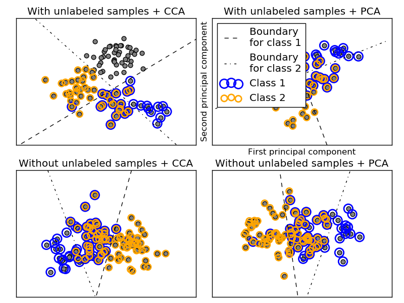

这个例子模拟了一个多标签文档分类问题。该数据集是随机生成的，根据下面的过程:
- 选择标签个数: n ~ Poisson(n_labels)
- n 次, 选择一个类 c: c ~ Multinomial(theta)
- 选择文档长度: k ~ Poisson(length)
- k 次, 选择一个单词: w ~ Multinomial(theta_c)
在上面的例子中，我们使用拒绝采样来保证 n>2 并且 文档长度不能为0。 同样，我们拒绝已经被选中的类。那些被同时分派给两个类的文档将会用 两个带颜色的圆圈进行标记。
分类过程是这样进行的：首先以可视化为目的，使用PCA和CCA将数据集投影到前两个主分量上；接着使用这个
sklearn.multiclass.OneVsRestClassifier
分类器进行分类。此分类器使用两个带有线性核的SVCs来为每一个类学习一个判别模型。
请注意，PCA 用来进行非监督降维操作，而CCA用来进行监督降维操作。
注意: 在图中, “unlabeled samples” 并不意味着我们不知道他的标记 (就像在半监督学习中) 而是那些样本本来就没有标签。
Python source code: plot_multilabel.py
print(__doc__)
import numpy as np
import matplotlib.pyplot as plt
from sklearn.datasets import make_multilabel_classification
from sklearn.multiclass import OneVsRestClassifier
from sklearn.svm import SVC
from sklearn.preprocessing import LabelBinarizer
from sklearn.decomposition import PCA
from sklearn.cross_decomposition import CCA
def plot_hyperplane(clf, min_x, max_x, linestyle, label):
# get the separating hyperplane
w = clf.coef_[0]
a = -w[0] / w[1]
xx = np.linspace(min_x - 5, max_x + 5) # make sure the line is long enough
yy = a * xx - (clf.intercept_[0]) / w[1]
plt.plot(xx, yy, linestyle, label=label)
def plot_subfigure(X, Y, subplot, title, transform):
if transform == "pca":
X = PCA(n_components=2).fit_transform(X)
elif transform == "cca":
X = CCA(n_components=2).fit(X, Y).transform(X)
else:
raise ValueError
min_x = np.min(X[:, 0])
max_x = np.max(X[:, 0])
min_y = np.min(X[:, 1])
max_y = np.max(X[:, 1])
classif = OneVsRestClassifier(SVC(kernel='linear'))
classif.fit(X, Y)
plt.subplot(2, 2, subplot)
plt.title(title)
zero_class = np.where(Y[:, 0])
one_class = np.where(Y[:, 1])
plt.scatter(X[:, 0], X[:, 1], s=40, c='gray')
plt.scatter(X[zero_class, 0], X[zero_class, 1], s=160, edgecolors='b',
facecolors='none', linewidths=2, label='Class 1')
plt.scatter(X[one_class, 0], X[one_class, 1], s=80, edgecolors='orange',
facecolors='none', linewidths=2, label='Class 2')
plot_hyperplane(classif.estimators_[0], min_x, max_x, 'k--',
'Boundary\nfor class 1')
plot_hyperplane(classif.estimators_[1], min_x, max_x, 'k-.',
'Boundary\nfor class 2')
plt.xticks(())
plt.yticks(())
plt.xlim(min_x - .5 * max_x, max_x + .5 * max_x)
plt.ylim(min_y - .5 * max_y, max_y + .5 * max_y)
if subplot == 2:
plt.xlabel('First principal component')
plt.ylabel('Second principal component')
plt.legend(loc="upper left")
plt.figure(figsize=(8, 6))
X, Y = make_multilabel_classification(n_classes=2, n_labels=1,
allow_unlabeled=True,
random_state=1)
plot_subfigure(X, Y, 1, "With unlabeled samples + CCA", "cca")
plot_subfigure(X, Y, 2, "With unlabeled samples + PCA", "pca")
X, Y = make_multilabel_classification(n_classes=2, n_labels=1,
allow_unlabeled=False,
random_state=1)
plot_subfigure(X, Y, 3, "Without unlabeled samples + CCA", "cca")
plot_subfigure(X, Y, 4, "Without unlabeled samples + PCA", "pca")
plt.subplots_adjust(.04, .02, .97, .94, .09, .2)
plt.show()
Total running time of the example: 0.35 seconds ( 0 minutes 0.35 seconds)